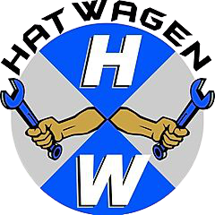
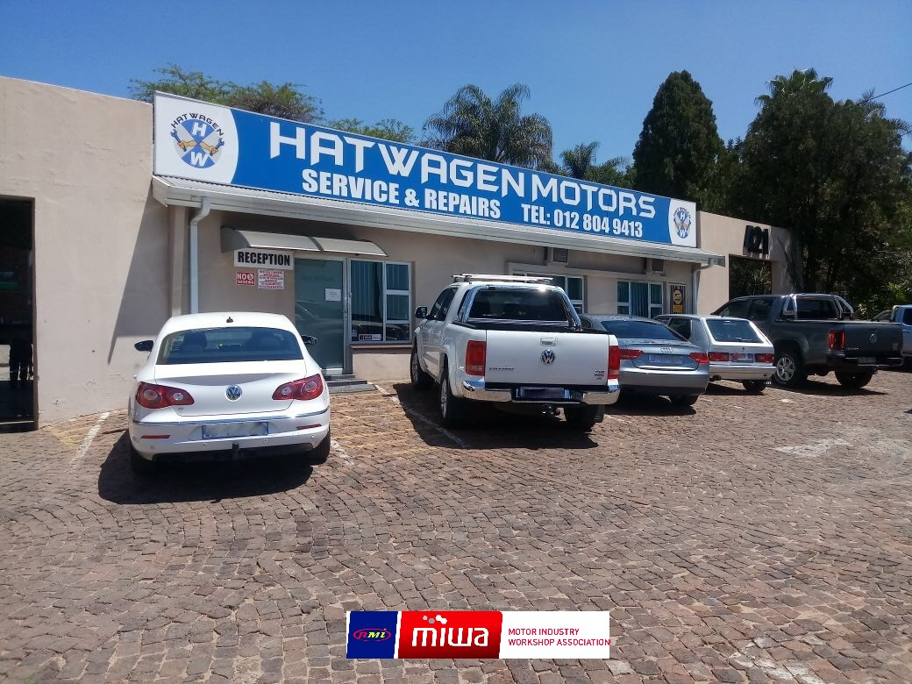
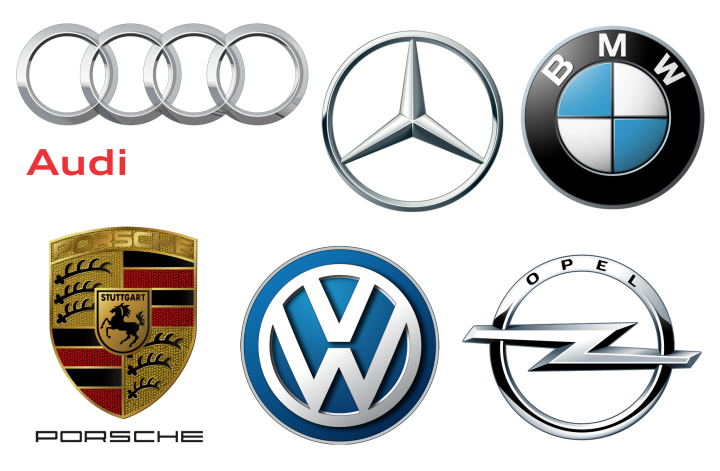

Hatwagen Motors
Information
Photo Gallery

About Us
Hatwagen Motors is auto mechanical company based in Pretoria and is a 5 Star rated RMI accredited service provider and has been in the motor industry for over 20 years.
We provide nearly all motor mechanical services.
Find out more here
Our Work
We specialize in VW and all German vehicles (All vehicles welcome except for French makes.)
Our Work

Get Involved
Contact Hatwagen Motors for all your auto mechanical needs, and come enjoy a cup of coffee accompanied by WIFI on the house
Make an appointment
Newsletter
©2020 Hatwagen Motors CC.